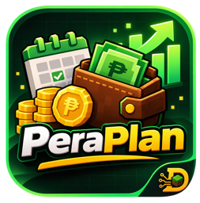

PeraPlanPrivacy Policy
Last updated: November 3, 2026
This policy explains what PeraPlan ("the app"), made by Reynier Apurillo / Dazen Development, does with your information. In short: we don't run a server, we don't collect your data, and we don't sell or share it.
1. Information you enter
Names, profile pictures, income, expenses, bills, budgets, savings goals and pay schedules you enter are stored on your device. The developer does not receive this information.
2. Sharing with people in your plan
When you create or join a plan, its entries are shared with the other people in that plan. Phones exchange this data through free public message relays (MQTT brokers such as broker.emqx.io and broker.hivemq.com). Every message is encrypted (AES-256-GCM) with a key that exists only in the plan's invite code, so the relays cannot read it. Anyone who has a plan's invite code can join that plan, so only share it with people you trust.
3. Google Sign-In and Google Drive (optional)
If you choose to sign in with Google, the app uses Google Sign-In to get your name, email address and profile picture, which are used as your default name and picture in the app. It also asks for the drive.appdata permission, which lets the app store your plans and profile in a hidden app-specific folder in your own Google Drive. The app cannot see, read or change any other files in your Drive. This data goes directly between your device and Google; it is not sent to the developer.
You can sign out in the app at any time, and remove the app's access at myaccount.google.com/permissions.
PeraPlan's use and transfer of information received from Google APIs adheres to the Google API Services User Data Policy, including the Limited Use requirements.
4. Backups on your device
If you turn on "Keep data even after uninstalling", the app saves a backup file in Download/PeraPlan on your device. Anyone with access to your device can open that file. You can turn this off and delete the file at any time.
5. App updates
The app checks GitHub (github.com/Dazeeen/peraplan-releases) for new versions. This check does not include your personal data.
6. What we don't do
- No ads, no analytics, no tracking.
- No selling or sharing of your data.
- No access to your bank accounts or payment details.
7. Deleting your data
Delete or leave a plan in the app (More → Delete / Leave this plan), uninstall the app, delete the backup file, and/or remove PeraPlan's access in your Google Account permissions.
8. Children
PeraPlan is not directed to children under 13.
9. Changes
We may update this policy. The date above shows the latest version.
10. Contact
Email apurillo.r.b@gmail.com or message us on Discord.